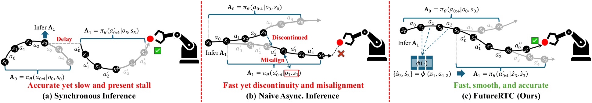
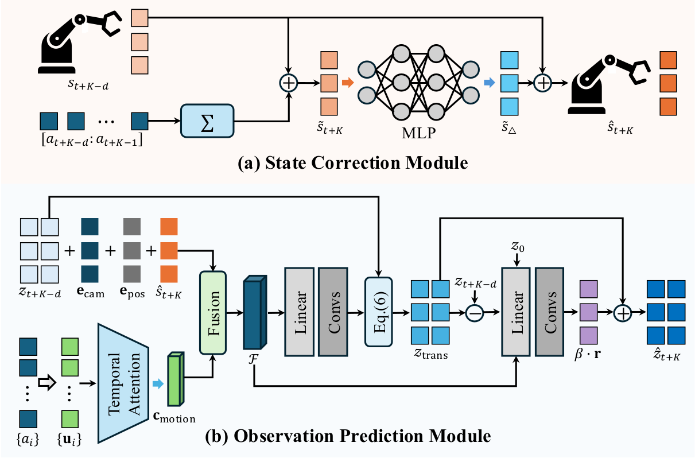
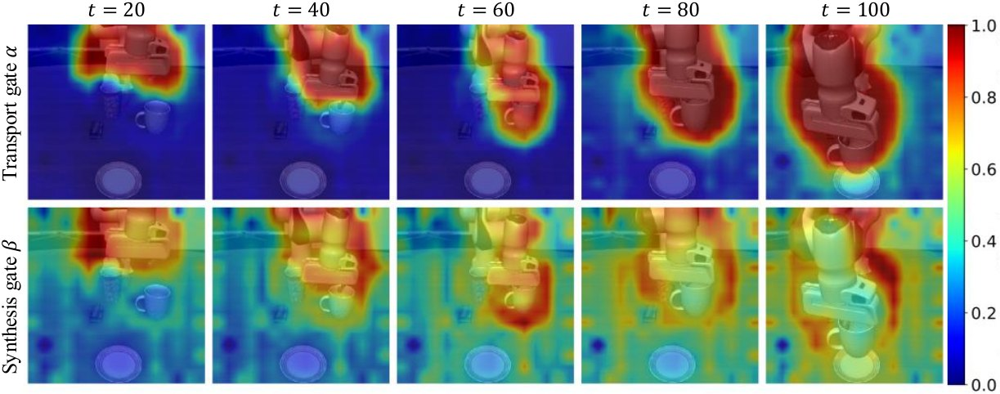
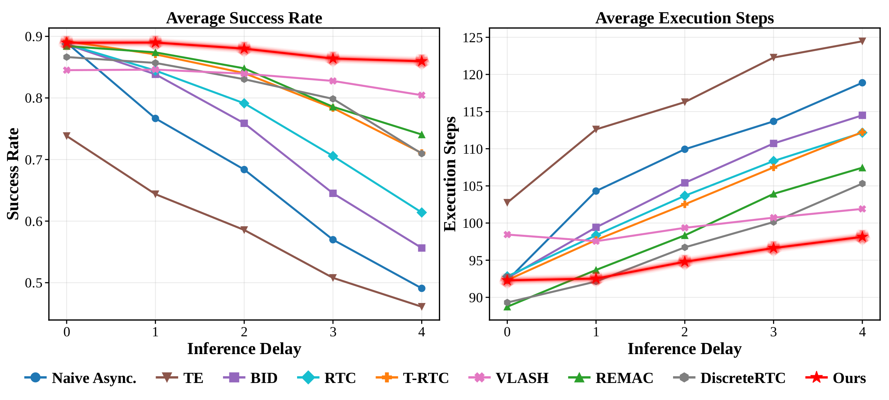
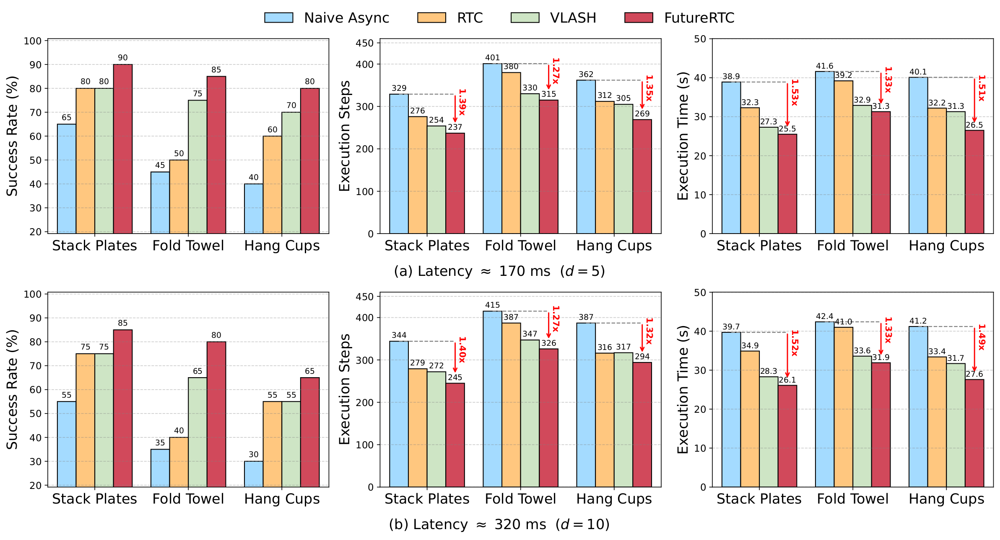

TL;DR
Under asynchronous execution, an action chunk is computed from an observation that is already stale by the time it runs. FutureRTC forecasts the execution-time visual latent and proprioceptive state from their stale counterparts, so the frozen policy behaves as if there were no delay at all.
The adapter attaches in front of a frozen backbone. It transfers across π0.5 and SmolVLA-450M without touching either.
LIBERO with π0.5: +20.2 points over naive asynchronous execution and +14.0 over the strongest training-time baseline.
On SmolVLA-450M (+6.45 M / +3.64 ms on π0.5) — a small fraction of one policy forward pass.
The Problem
Action chunking amortizes VLA inference cost, but the chunk boundary is where real-time deployment breaks down. Synchronous execution keeps the conditioning fresh and stalls the robot; naive asynchronous execution keeps the robot moving and lets the conditioning go stale.

Execution paradigms with prediction horizon H = 5, execution horizon K = 3 and inference delay d = 2. (a) Synchronous: the robot stalls during inference — accurate, but stop-and-go. (b) Naive asynchronous: chunk A1 is conditioned on the stale pair (o1, s1) yet executed at step 3, so its first d actions must be discarded. (c) FutureRTC: the adapter φ(·) forecasts the execution-time context (ẑ3, ŝ3) from the stale latent and the committed actions, so the chunk is already aligned and runs from its first action.
Asynchronous execution is not inherently costly. When we feed the policy the true execution-time observation and state as an oracle, the LIBERO success rate stays flat across every delay we test — 96.6 % at d = 5 through d = 20 on π0.5. All of the degradation comes from conditioning on stale inputs, not from overlapping inference with execution. That upper bound is what FutureRTC sets out to recover.
Method
Prior work either post-processes the action sequence or retrains the policy. FutureRTC instead reconstructs the missing input: a state correction module fixes the rolled-forward proprioceptive state, and an observation prediction module forecasts the visual latent the policy would have seen at execution time.

The adapter: a State Correction Module (a) and an Observation Prediction Module (b) produce the execution-time state and visual latent from stale information.
The execution-time state can be estimated by rolling the stale state forward through the committed actions, but forward integration accumulates bias, because commanded motion and actual motion differ. An MLP conditioned on the rolled-forward state and the normalized delay d/dmax predicts a compensatory residual, with orientation updated by relative-rotation composition.
Rather than generating pixels, the module works in the VLA's own visual latent space, so its output is directly consumable by the policy and its cost stays small. Because the dominant visual change comes from the robot's own displacement, the committed actions are mapped into an explicit physical feature space — instantaneous command, cumulative displacement, increment, accumulated path length, temporal progress — and passed through temporal self-attention to form a motion prior.
That prior is projected into a 2D flow field and a transport gate α, which warps the stale feature by differentiable bilinear grid sampling. A gated residual branch then supplies what warping fundamentally cannot: contact deformation and newly disoccluded content, injected through a synthesis gate β. The result is fed straight into the policy, bypassing its vision encoder.
Matching the latent is not the same as matching the behavior it induces. A consistency loss asks the frozen policy to produce the same chunk from the predicted pair as from the true execution-time pair, using a single-step flow approximation to avoid multi-step flow matching during training. Delays are sampled uniformly at each step, so one adapter covers the whole delay range without per-delay retraining.

What the gates learn. Top: the transport gate α activates on the moving arm and gripper, propagating existing features along the committed motion. Bottom: the synthesis gate β highlights motion boundaries and newly revealed regions, exactly where warping cannot explain the change.
Simulated Results
Across both backbones and every delay we test, FutureRTC reaches the highest success rate while finishing in the fewest execution steps. Where the baselines degrade steeply as delay grows, FutureRTC loses only 5.7 points on π0.5 and 6.4 on SmolVLA from d = 5 to d = 20.
| Method | π0.5 | SmolVLA-450M | ||||||
|---|---|---|---|---|---|---|---|---|
| Success Rate (%) ↑ / Execution Steps ↓ | Success Rate (%) ↑ / Execution Steps ↓ | |||||||
| d=5 | d=10 | d=15 | d=20 | d=5 | d=10 | d=15 | d=20 | |
| Inference-time | ||||||||
| Naive Async. | 89.5 / 169.0 | 82.7 / 183.0 | 76.3 / 196.6 | 68.3 / 210.9 | 70.3 / 206.4 | 64.5 / 218.2 | 61.3 / 224.2 | 56.2 / 232.8 |
| TE | 87.8 / 173.0 | 84.3 / 180.1 | 80.6 / 185.8 | 74.8 / 197.0 | 68.4 / 208.8 | 66.7 / 212.9 | 62.6 / 220.0 | 59.7 / 224.2 |
| BID | 90.3 / 168.2 | 84.0 / 180.5 | 76.1 / 197.3 | 71.3 / 205.8 | 70.0 / 207.6 | 65.0 / 216.4 | 61.7 / 223.0 | 57.1 / 229.4 |
| RTC | 89.9 / 168.4 | 83.2 / 181.6 | 77.5 / 194.2 | 73.7 / 200.5 | 69.7 / 208.1 | 64.9 / 217.0 | 62.6 / 220.9 | 58.7 / 226.3 |
| Training-time | ||||||||
| T-RTC | 89.4 / 168.5 | 84.0 / 177.7 | 77.9 / 193.1 | 74.0 / 200.1 | 69.9 / 208.7 | 65.6 / 215.8 | 61.7 / 222.0 | 59.4 / 226.6 |
| VLASH | 88.0 / 171.9 | 83.4 / 178.9 | 79.5 / 187.4 | 74.5 / 197.4 | 69.3 / 208.5 | 65.8 / 217.6 | 64.7 / 215.6 | 61.9 / 220.9 |
| REMAC | 90.8 / 166.6 | 85.4 / 177.6 | 78.5 / 192.6 | 73.9 / 199.6 | 70.9 / 206.2 | 66.5 / 213.5 | 62.2 / 220.9 | 59.7 / 224.9 |
| FutureRTC (Ours) | 94.2 / 162.4 | 92.4 / 166.9 | 91.0 / 170.1 | 88.5 / 175.1 | 75.8 / 198.7 | 73.3 / 202.7 | 71.6 / 206.4 | 69.4 / 209.4 |
LIBERO, averaged over the Spatial, Object, Goal and Long suites. Inference-time methods and ours build on the frozen LeRobot-released fine-tuned weights; training-time baselines are reproduced per their publications, except VLASH which provides an official LIBERO implementation.

Kinetix — 12 highly dynamic, stochastic environments, averaged over all tasks, with delay d ∈ [0, 4]. FutureRTC drops only 3.0 % in success rate from d = 0 to d = 4 and needs the fewest execution steps for d ≥ 2, while the baselines take more steps under large delay because of reactive hesitation. At d ∈ {0, 1} a few training-time methods edge ahead — they fine-tune or retrain on the benchmark, whereas our policy stays frozen.
Real World
A dual-arm AgileX Cobot Magic running π0.5 at 30 Hz. Serving the policy remotely gives an end-to-end latency of about 170 ms (d ≈ 5); injecting a further 150 ms emulates constrained deployment at 320 ms (d ≈ 10). Three tasks, 20 randomized trials each.

Real-world comparison on Stack Plates, Fold Towel and Hang Cups. FutureRTC holds the highest success rate on every task at both latencies — and the margin widens as latency grows, e.g. Fold Towel at 320 ms reaches 80 % versus 35 % for naive asynchronous execution. It also finishes fastest throughout, at 1.27–1.53× the speed of naive asynchronous execution.
Videos
Every clip is five consecutive evaluation episodes concatenated, recorded under asynchronous inference. Click any cell to play it, or use play row to start all four methods on a task together. FutureRTC moves more decisively with fewer hesitations; the baselines show jerky transitions and stall at chunk boundaries.
Citation
@article{jiang2026futurertc,
title = {FutureRTC: Real-Time Robot Execution with
Anticipatory-Conditioned Action Chunking},
author = {Jiang, Hai and Zou, Yixian and Liang, Binbin and
Liu, Boqian and Meng, Fanman and Liu, Shuaicheng},
year = {2026}
}